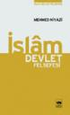

- Asp.net'de GridView elementinde açılır menü ile süzme işlemini yapmayı anlatan bir makale. Link
- Javascript ile erişilebilirliği arttırmak. Bu makalede özellik seçiciler ile yaptığımızı javascript ile yapımını gösteriyor. Tabi javascript ile yapınca tüm tarayıcılar destekliyor. Link
- CSS ve png yardımı ile filigran yapmayı anlatan güzel bir makale. Link
- CoScripter ...
Kutu Modeli - Görünüm Efekti Özellikleri
Bu aralar CSS kitabına(e-kitap) ağırlık verdim. Kitaptaki eksik bölümleri tamamlıyorum. İnşallah en yakın zamanda bitecek. Bu konuda onlardan biri.
Kutu elementlerin görünümüne çeşitli etkiler yapan özellikleri göreceğiz bu makalede çoğu CSS2 ile birlikte gelen bu özellikler aşağıda sıralanmıştır.
- overflow - taşma
- clip - kırpma
- visibility - görünürlük
Overflow
Yapısı: overflow: <deger>
devamını oku
Aldığı ...Sql'de Tekrarsız sonuçlar elde etmek - DISTINCT
Bu kodu her defasında kullanmadan önce nasıl kullanıldığını arıyorum. Bu günde aradım ve buraya yazmaya karar verdim. Unutursam burada bulurum diye. Belki sizlerede yarar.
Şimdi kullanıcıların uyelik'lerinin ve resimlerinin olduğu iki tablom var. Bunları bir birine bağlıyorum ve sadece resimleri olanları gösteriyorum. Ancak şöyle bir sorunum oldu. Her resim ...
devamını oku06 Eylül 2007 Web'den Seçme Haberler
- Asp.Net ViewState özelliği hakkında güzel bir makale. Link
- Telekom internet alt yapısına yatırım yapıyormuş. Hadi hayırlısı bakalım. Link
- Daha önce Google Reader'a arama eklemeyi anlattık. Ama gerek kalmamış çünkü Google kendi aramasını eklemiş. Google'dan beklediğimden daha yavaş oldu bu, bence daha önce çıkmalıydı. Neyse çıktığına göre sorun ...
03 Eylül 2007 Web'den Seçme Haberler
- CSS3'deki listeler daha süslü olacakmış. Link
- Blueprint'in yayınladığı CSS Anaçatısının 0.5 sürümü yayımlanmış. Link
- Yahoo javascript kütüphanesindeki(YUI) lighbox uygulamasını geliştirmiş, güzelde olmuş. Link
- Hem İE hemde Firefox'a göre web sayfası tasarlarken nelere dikkat etmeliyiz. Link
- İşaret kutularının(chechkbox) şeklini değiştirelim. Link
- Google arama sonuçlarında yeni ...
01 Eylül 2007 Web'den Seçme Haberler
- Ajax ile yapılmış güzel bir tarih ekleme betiği. Link
- Erişilebilirliği yüksek mükemmel bir haber betiği. Link
- CSS Anaçatıları(framwork) artmaya başladı. YAML adlı yeni bir CS Anaçatısı daha duyuruldu. Link
- Google Gear(çevirim dışı çalışan web programlaması) web geliştiricileri için indirilebilir bir sürümünü bizlere sunmuş. Link
- 600'den fazla ajax ...
İslam Devlet Felsefesi - Mehmed Niyazi
Bu kitabı okurken kendimi kitabın derinliklerine indiremedim. Derin bir mevzu ama beni biraz aştı sanki bu nedenle kitabın kendi özeti ile yetiniyorum. Yazar bu kitapta İslâm'ın temel prensipleriyle İslâm tarihinde geçmiş uygulamaları hukuk mantığıyla ele alarak İslâm'da "devlet"in ne olduğunu ortaya koymaya çalışmaktadır. Ayrıntılı bilgi için tıklayınız ...
devamını oku28 Ağustos 2007 Web'den Seçme Haberler
- Çeşitli İletişim Formu Örnekleri .Link
- Web Gelişriciler için kaynaklar. Link
- JQuery ile yapılmış flash benzeri hoş bir menü örneği. Link
- Türksat, KabloInternet hızını 6 Mbps’ye çıkarmış. Link
- Doğuş grubu Türkiye'nin ilk masaüstü TV platformunu çıkarmış. Beta sürümü yayınlanan Sipru ile TV seyredip, radyo dinleyebiliyor ve bu arada çevirimiçi ...
25 Ağustos 2007 Web'den Seçme Haberler
- En önemli javascript kütüphanelerinden jQuery'nin yeni sürümü çıkmış. Yeni sürümde iki önemli yenilik var. Yeni Seçici araçları ve önceki sürüme göre daha hızlı olması. Link
- Günlük yazarlarına sitelerinin arama motorlarında daha iyi sonuç vermesi için ipuçları. Link
- Google'un RSS okuyucu Google Reader için 50 adet Firefox eklentisi. Link ...
24 Ağustos 2007 Web'den Seçme Haberler
- .Net'de trace sonuçlarını anlamak ile ilgili bir makale. Link
- Microsoft yeni hoş görünümlü silverlight destekli arama motorunun betasını açtı. tafita.com Link
- Sadece CSS ile lightbox yapımını anlatan bir makale. Link
- Tüm IE versiyonları için düzeltme(hack) kodu. Link
- Resim gösterimine farklı bir mantık getiren SiggRaph2007 izleminizi tavsiye ederim ...